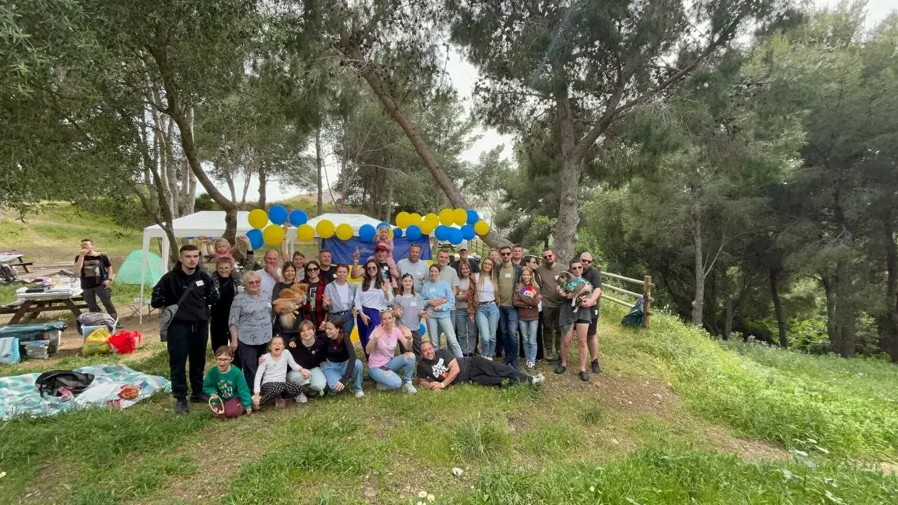
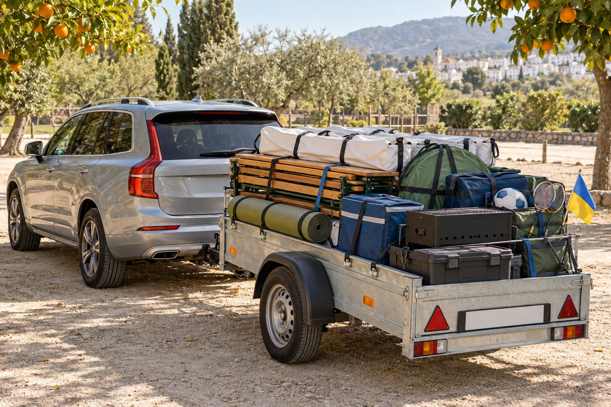
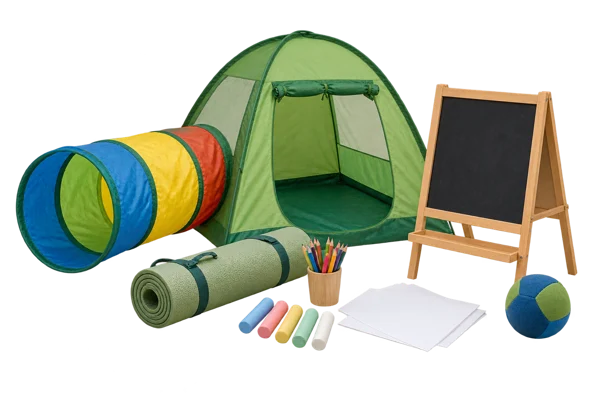
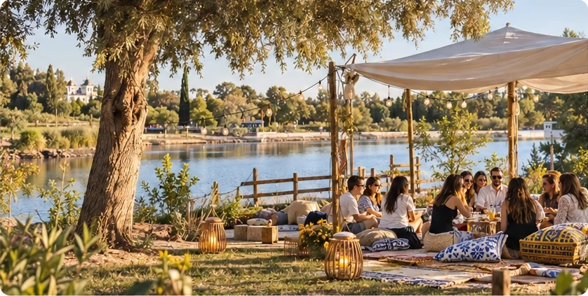
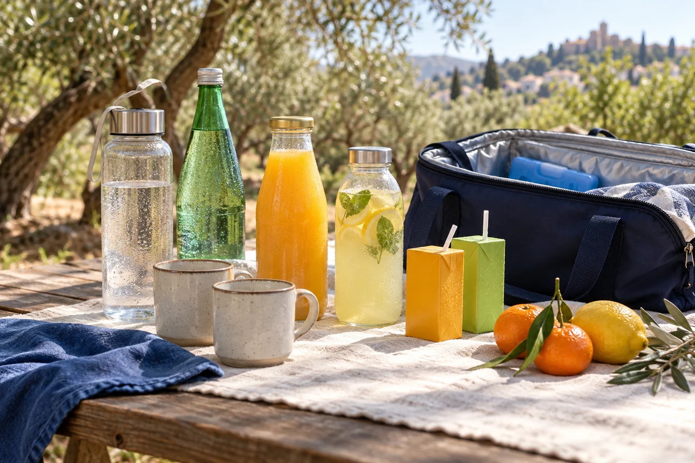
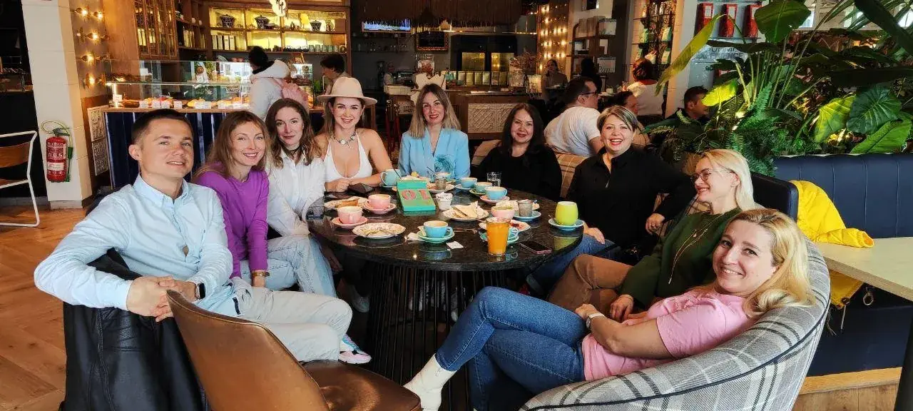
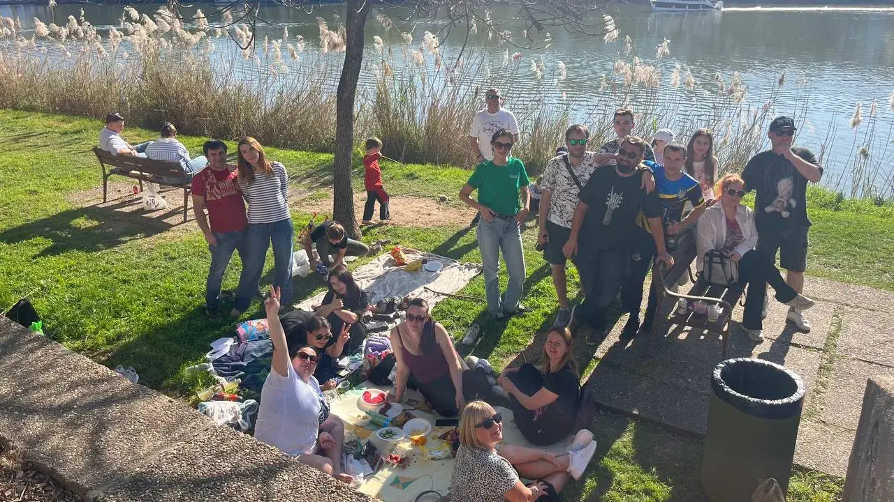
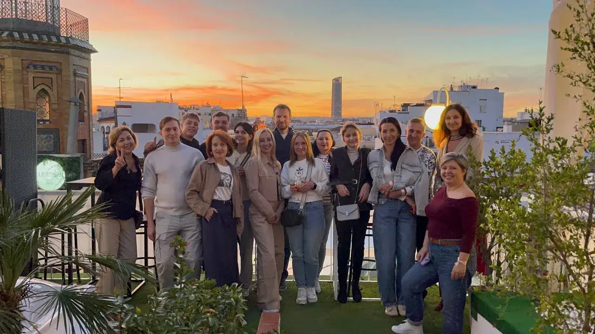

УКРАЇНЦІ ТА ДРУЗІ · ІСПАНІЯ
Свої люди.
Більше, ніж пікнік.
Приходьте навіть якщо нікого не знаєте. Знайомимося, ділимося культурою й створюємо спогади разом.
Свої люди — серед природи

НАШ ФОРМАТ
Пікнік — лише один із наших форматів. Зустрічаємося за настільними іграми, у парку з дітьми, на набережній або просто за розмовою. Зустрічаємося наживо, знайомимося, ділимо витрати та проводимо день серед своїх.
Ділимо реальні витрати на їжу, інвентар і перевезення. Суму погоджуємо для кожної події.
Кількість людей визначає закупівлі. Чим раніше — тим простіше й економніше підготувати зустріч.
Це дружня спільнота. Можна приїхати вперше й нікого не знати.
Хочете зустрітися у своєму місті? Зберімо охочих — і ми допоможемо організувати спільний пікнік. Напишіть нам: усе починається з бажання побачитися.

ВАМ НЕ ПОТРІБНО ВЕЗТИ ВСЕ ЦЕ
За одним днем відпочинку — десятки речей і години підготовки. Ми збираємо, завантажуємо, привозимо й облаштовуємо все разом, щоб кожному не доводилося робити це окремо.

І це ще не все, що їде з намиУ цьому й зручність нашого формату: ділимо витрати, підготовку та великий спільний стіл. Ви можете більше часу присвятити відпочинку й знайомствам.
Воду та свої напої беріть із собою. Особисті речі — за потребою. Решту узгоджуємо до зустрічі.



Це далеко не весь перелік. Комплект залежить від місця, погоди та кількості людей. Додаткові речі, зокрема кальян, узгоджуємо окремо.

ЗУСТРІЧІ ПРОДОВЖУЮТЬСЯ
До зустрічі залишилось
Запланований час настав. Уточніть статус зустрічі в організатора.

25 листопадаВідкриваємо для нашої компанії нове місце біля Севільї: парк Las Graveras у Сан-Хосе-де-ла-Ринконада. Зустрінемося біля озера, познайомимося й проведемо день за спільним столом.
Приходьте, навіть якщо
нікого не знаєте.


ЩО ВЗЯТИ ІЗ СОБОЮ
Напої не входять до організаційного збору.
Воду та всі улюблені напої для себе й родини кожен приносить сам. На місці їх не продаємо.
Десерт чи домашня страва до столу — за бажанням.

ОСНОВНЕ МЕНЮ
Шашлик із курки та свинини, борщ, окрошка, салати й оливки — орієнтир базового меню. Остаточний перелік погоджуємо для конкретної зустрічі.
ГОТУЄМО ПІД КІЛЬКІСТЬ ЛЮДЕЙ
Закуповуємо продукти, маринуємо, вакуумуємо, робимо заготовки та плануємо порції. Частину готуємо заздалегідь, частину — на місці.
Підтверджуйте участь і долучайтеся до збору завчасно. Додаткові покупки й поїздки в останній день збільшують витрати для всієї компанії.

ДОДАМО ЗА БАЖАННЯМ
Додаткові страви розширюють меню й бюджет. Оберіть побажання заздалегідь: погодимо кількість, начинку та додатковий внесок.
Домашні, зі сметаною.
Місцевий смак за спільним столом.
Смажена, золотиста, з кропом.
Домашні та ситні.
Начинку обираємо разом.
Ситний варіант із погодженою начинкою.
ЗАВЖДИ РАДІ ДОПОМОЗІ
Не потрібно брати на себе все.
Навіть одна конкретна справа допомагає.
Спільнота починається
з простого «привіт».

ГЕОГРАФІЯ ТА СПОГАДИ
Де й коли зустрінемося — залежить від вас. Щойно збереться достатньо охочих, домовимося про формат, дату та зустріч у вашому місті.


КУДИ ВИРУШИМО ДАЛІ
Головне — щоб зібралося достатньо охочих. Гранада, Мадрид, Аліканте, Астурія, Кордова, Португалія чи ваш напрямок: місце, логістику та бюджет погодимо разом.
Parque Natural de Fuengirola. Нове місце для обговорення: дату й умови зустрічі ще не погоджено.
Переглянути локаціюZona de Sombra Adaptada. Збираємо інтерес до зустрічі; формат і доступність уточнимо.
Переглянути локацію
ВРАЖЕННЯ ТА ПОБАЖАННЯ
Що сподобалося? Чого не вистачило? Яку зустріч хотілося б наступною? Ваші конкретні побажання допомагають зробити наступний день кращим.
Поділіться досвідом: який формат сподобався, що запам’яталося та що можна покращити. Ваш відгук допоможе тим, хто ще тільки збирається прийти.
Публікуємо відгуки лише з дозволу автора.

ВІДПОВІДІ ДО ПОЇЗДКИ
Зібрали основні питання в одному місці. Якщо ваша ситуація особлива — напишіть, указавши тему й деталі.
Так. Саме для нових знайомств ми й збираємося. У заявці можна написати, що ви вперше: підкажемо, де зустрітися й до кого підійти.
Це відкрита дружня зустріч українців та друзів. Запрошуйте й іспанських друзів: ділимося культурою та знайомимося з різними людьми. Спільно ділимо організаційні витрати й відпочиваємо. Це не ресторанне обслуговування: на місці можемо разом накривати стіл і допомагати з приготуванням.
Є організаційний збір, а не окрема плата за вхід. Сума залежить від кількості людей, меню, локації та перевезення. До підтвердження участі повідомляємо суму й що саме вона покриває. Універсальної ціни для всіх зустрічей немає.
Чим раніше, тим краще. За кількістю людей закуповуємо, маринуємо, вакуумуємо та готуємо заготовки. Пізні зміни означають додаткові поїздки, покупки й витрати. Написати в останній день можна, але можливість участі потрібно підтвердити.
Ні. Воду та всі напої для себе й родини кожен приносить сам. На місці їх не продаємо. Їжу до спільного столу можна додати за бажанням, попередньо узгодивши з організатором.
Так. Беремо дитячий намет, тунель, килимки, м’ячі, ракетки, дошку для малювання, папір, олівці та крейду — набір залежить від виїзду. Діти залишаються під наглядом своїх дорослих. Аніматор доступний лише коли це окремо зазначено в анонсі.
Повідомте про них до закупівлі продуктів. Узгодимо склад і можливі варіанти. Не обіцяємо окремої кухні без алергенів, тому важливі обмеження потрібно обговорити заздалегідь.
Беремо навіси від сонця й дощу, кріплення та затискачі. Але при небезпечній погоді можемо перенести або змінити формат. Остаточні зміни повідомляємо учасникам; перед поїздкою перевірте повідомлення організатора.
Маршрут залежить від локації. Для Las Graveras можна розглядати Cercanías до La Rinconada, а точний шлях до місця збору уточнимо. Якщо потрібне попутне місце, зазначте це в заявці; наявність транспорту не гарантуємо.
Плануємо столи, лавки, стільці, колонку, ліхтарі та гірлянди для вечора. Точний комплект залежить від локації й кількості учасників. Повідомте заздалегідь, якщо вам потрібні особливі умови доступності чи сидіння.
Напишіть якнайшвидше. Умови скасування та повернення потрібно погодити до сплати, оскільки частина грошей уже може бути витрачена на продукти й підготовку. Універсального правила повернення для всіх подій немає.
Так: із закупівлями, перевезенням, встановленням навісів, столом, приготуванням і прибиранням. Також раді музикантам, ведучим, майстрам, фотографам та людям з ідеями. Оберіть відповідну тему у формі.
Так, будь-де, якщо збереться достатньо охочих і буде придатне місце. Проголосуйте за напрямок або напишіть місто й приблизну кількість зацікавлених. Голосування не є бронюванням чи підтвердженням події.
Форма готує повідомлення з вашим ім’ям, контактом, метою звернення та деталями. Ви перевіряєте текст і самі надсилаєте його організатору в Telegram. Підготовка повідомлення ще не підтверджує участь.
Щоб організатор розумів, хто звертається, міг відповісти й узгодити участь. Контактні поля не публікуються на сайті й не зберігаються тут. Сповіщення про майбутні зустрічі — лише за окремим бажанням.
ВАШІ ЛЮДИ ВЖЕ ДЕСЬ ПОРУЧ
Приїжджайте самі, з родиною чи друзями. Ми допоможемо зробити перший крок.


ПІДТРИМКА ТА СПІВПРАЦЯ
Ми не будуємо формат навколо комерції: бюджет часто впритул, і ми намагаємося знижувати вартість, розділяючи витрати. Відкриті до різних варіантів підтримки — без зайвого пафосу.
Продукти, інвентар, транспорт, доступна локація або фінансова участь у конкретних витратах. Формат підтримки й умови погоджуємо відкрито.
Розповісти про зустріч у групі, поділитися анонсом, допомогти з фото, відео чи інформаційним партнерством.
Музиканти, ведучі, фотографи, майстри та люди з цікавими заняттями. Запропонуйте свій формат — обговоримо можливості й умови.
ЩЕ БІЛЬШЕ ПРИВОДІВ ПОБАЧИТИСЯ

Камерні вечори, настільні ігри й знайомства. У Севільї зустрічаємося часто.

Прості зустрічі без великої підготовки: підстилка, свої напої та час разом.

Прогулянки, захід сонця й розмови без поспіху. Запрошуйте своїх друзів.